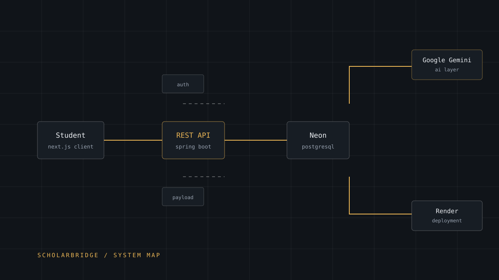

Software · AI
ScholarBridge
An admissions-support platform for students who need to find, understand and act on scholarship and college information, without a counsellor in the room.

- Role
- Founder, product design, full-stack development
- Status
- Live · in active development
- Front end
- Next.js, React, Tailwind CSS
- Backend
- Java, Spring Boot, REST
- Data
- PostgreSQL on Neon
- AI
- Google Gemini
- Deploy
- Vercel (web) · Render (API)
Problem
Scholarship and admissions information is scattered across dozens of sites, PDFs and social posts, each with its own format, its own deadlines and its own definition of who qualifies. A student without a school counsellor, a working internet connection at home, or an adult who has been through the process has to reconstruct the whole picture alone, every cycle.
The information is technically public. Practically, it is gated by attention, formatting and time.
Why it mattered
I hit this gap myself: borrowing a friend's laptop, working from a community machine, learning to save constantly. Everything gets harder when the tool you need is not yours and the hour you have is short.
Missed deadlines and unread eligibility rules do not just cost a student a form. They quietly remove an option that was never really open to begin with.
My role
I founded ScholarBridge and own it end to end: product definition, information architecture, interface design, front-end and API development, database schema, deployment and the domain and email setup that makes it a real public product rather than a demo.
- Defined the product requirements document and the scope of the first shippable release
- Designed the data model for opportunities, programmes and student records
- Built the REST API and the pages that consume it
- Set up deployment, environment configuration and the DNS / transactional-email architecture
Technical approach
The system is deliberately split so that the AI layer can change without touching everything else.
- Next.js front end for fast, SEO-friendly pages. Most students arrive from a search, so first paint and shareable links matter more than client-side complexity.
- Spring Boot REST API as a separate service, so business rules, authentication and AI calls live behind one contract instead of leaking into the UI.
- PostgreSQL on Neon for a serverless, branchable database that can grow from a seed catalogue to real user data without a migration project.
- Google Gemini as the AI provider for contextual guidance, answering the questions a static directory cannot, while the directory remains the source of truth.
- Vercel for the web, Render for the API: each platform doing the one thing it is good at, with free-tier headroom while the product finds its audience.
Implementation
The decision I care most about was separating canonical data from generated guidance. The directory is structured, reviewable and cacheable; the AI layer sits in front of it and can only interpret what the directory already says. That keeps a language model from inventing a deadline that does not exist.
Other deliberate choices:
- API and web deployed as separate services so a backend release does not require a front-end redeploy
- Environment configuration kept entirely out of the repository, with no keys in case studies, commits or logs
- Domain, DNS and sender-domain records planned before launch, because transactional email fails silently when they are treated as an afterthought
- Mobile-first layouts: the majority of the target audience is on a phone, not a laptop
Impact
ScholarBridge is live and in active development. Rather than publish vanity numbers for a product still finding its audience, I am holding impact claims until I can back them with real usage: sign-ups, opportunities surfaced, deadlines met.
What is already proven: the full path from idea to public product works: data model, API, interface, AI layer, payment-free onboarding, deployment, domain and email, all running on live infrastructure.
Challenges
- Data trust. Admissions data rots. Scraping it once is easy; keeping it honest is the actual product, and that is a workflow problem before it is an engineering one.
- AI accuracy. A model that sounds confident about a wrong deadline is worse than no model. Constraining Gemini to the curated directory was the fix, and it cost flexibility.
- Scope. The first version could have done everything. It ships as a focused directory with assistance layered on, because a small useful thing beats a large unfinished one.
- Infrastructure on a budget. Free tiers solve cost but introduce cold starts and limits; documenting those boundaries early prevented surprise outages.
What I learned
The hardest part of ScholarBridge was never the code. It was deciding what the product was allowed to claim. Every other engineering decision followed from that.
I also learned that splitting a project into a web service and an API on day one feels like overhead until the first backend deploy, and then it feels like the only sensible way to work.